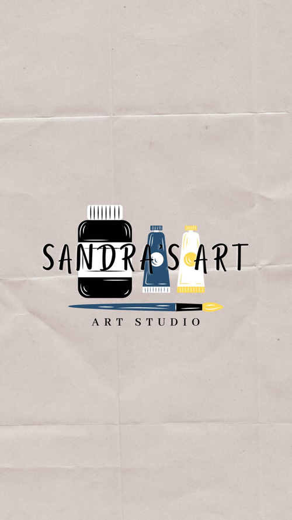
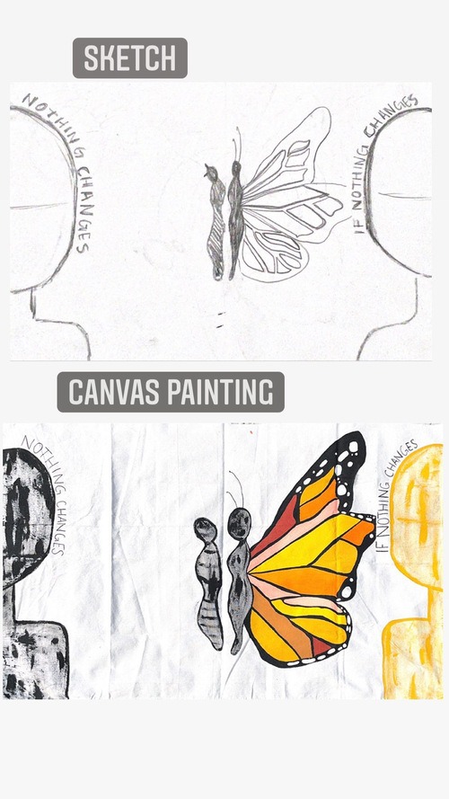
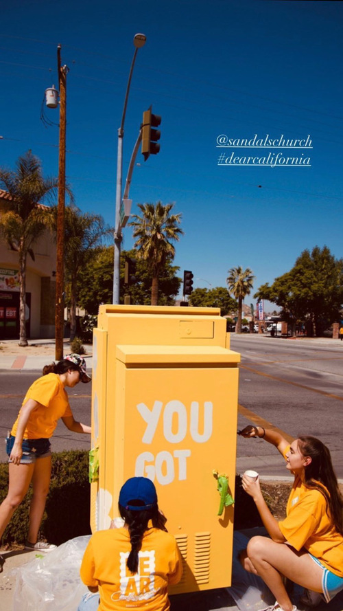
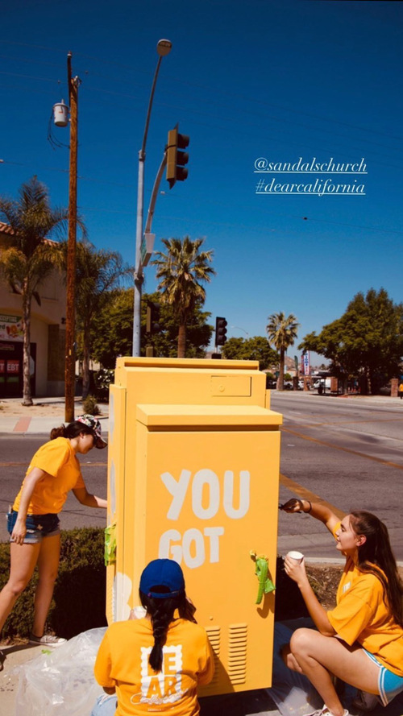
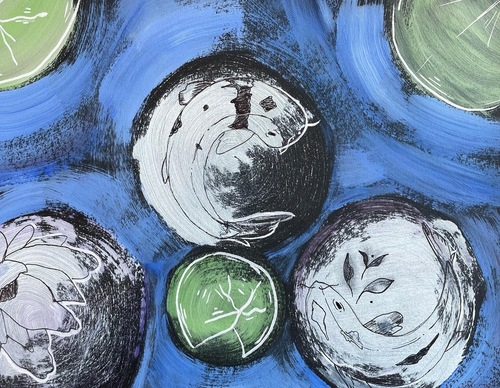
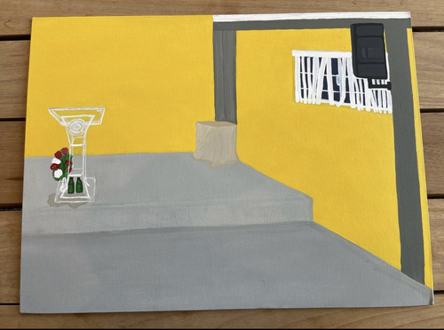
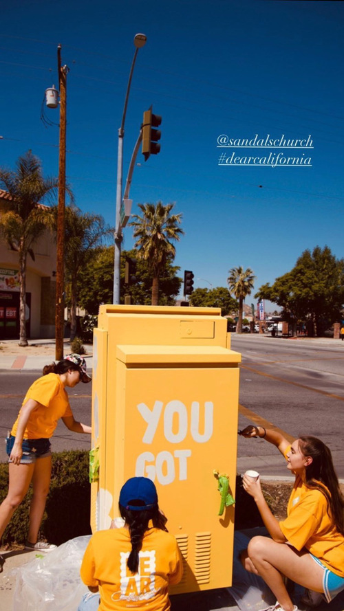
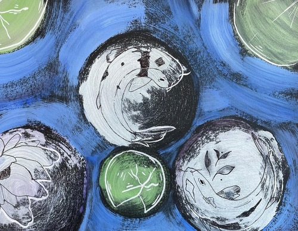
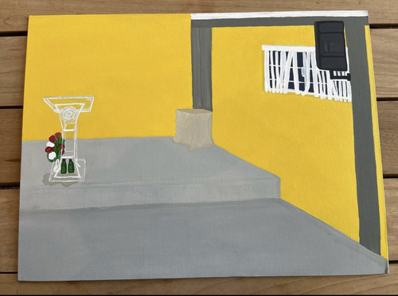

Sandra Santos
I'm a driven college student, looking for an entry-level opportunity in which I can apply and expand my exceptional and on-going creative and artistic skills. Currently, I am a first year Art (Studio) major, attending the University of California, Riverside. I'm working towards my B.A. to hopefully minor in business and open a small art business or art gallery of my own, one day. I'm interested in any job position or internship that can challenge my skills and help me gain more work experience. I'm able to provide a flexible schedule and I am interested in being considered for overtime work. More importantly, I'm eager to learn from others, work with others and grow as an individual.
There is a lot that I would love to share about myself. I believe there are many important characteristics that make me qualified. To begin, I am a self-disciplined person. I have the ability to work hard and act professionally independent when it comes down to it. This skill goes hand in hand with being open-minded. As an artist, it is necessary for me to be mentally open to receiving new ideas, advice and critiques given or shared to me. For me, it is important to be able to work around a diverse group of people, who come from different backgrounds and have different mindsets. Being exposed to various groups can help create inspiration for new pieces of artworks and creative ideas. Being open-minded while still remaining firm on my beliefs is an essential skill for an artist.
As a family oriented person, it is also important to have loved ones you deeply care about and who you put at the core of your priorities. This serves as a motivation to try my hardest because I know that my effort isn't in vain and will not go unnoticed. Some additional things I enjoy doing include helping others, finding new ways to expand and challenge my comfort zone. There is a saying that I live by and it goes "maybe I didn't get paid well, but at least I gained some experience from it". It is important to always be aware of what one can gain from any position or opportunity in life. Although I may not have any previous professional experience, I have volunteered at a public library for 1 year and a half and completed more than 100 community service hours. I enjoy doing volunteer work, especially because I have the chance to interact with people of different ages around my community. I have also volunteered multiple times and continue to volunteer at the church I'm attending. Overall, most of my volunteer experiences have helped to strengthen my communication, social and organizational skills. Plus, I was able to put my fluency in another language, Spanish, to use as well. Down below, I have included the rest of my portfolio which shines more focus over my educational and professional experiences. If you have any questions, feel free to contact me. Thank you!
Experience
Library Volunteer
• Organized books and items on shelves
• Helped patrons with computer assistance
• Participated in programs provided for children and families
Assistant Coach
• Extremely responsible for supervising kids and coaching
• Worked alongside various Varsity Coaches to train and help kids learn basic soccer skills
Church Volunteer Work
• Help organize events, meetings, activites and services
• Assist leaders and members of the church
• Interior Maintainence
• Cleaning after service hours and special events
Education
UC Riverside
Portfolio


 



 